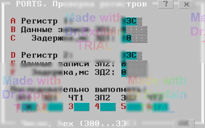

3.2 Проверка регистров (PORTS)
Тест используется для проверки правильности операций записи и чтения аппаратных регистров АСК при отладке АСК. При старте и завершении данного теста приведение аппаратуры СК в исходное состояние не производится. Тест позволяет производить последовательные запись и/или чтение в один или два аппаратных регистра АСК. Между операциями записи и чтения можно установить программные временные задержки заданной длительности.
Утилита предоставляет меню, показанном на рисунке:

Опции "Адрес регистра 1" и "Адрес регистра 2" определяют адреса 1-го и 2-го аппаратных регистров АСК. Адреса указываются в 16-ричном формате. Эти адреса могут совпадать, что соответствует работе с единственным аппаратным регистром АСК.
Опции "Данные записи ЗП1" и "Данные записи ЗП2" определяют слова данных для записи в 1-ый и 2-ой регистры АСК.
Опции "Задержка, мc ЗД1" и "Задержка, мc ЗД2" определяют время 1-ой и 2-ой программных задержек (после записи в 1-ый и 2-ой регистры, соответственно).
Опции "Последовательно выполнять" определяют операции, выполняемые в цикле обмена с аппаратными регистрами АСК. Операции выполняются последовательно, в порядке их перечисления:
- "ЗП1" - выполнять запись в 1-ый аппаратный регистр АСК;
- "ЗД1" - выполнять 1-ую задержку;
- "ЧТ1" - выполнять чтение из 1-го аппаратного регистра АСК;
- "ЗП2" - выполнять запись во 2-ой аппаратный регистр АСК;
- "ЗД2" - выполнять 2-ую задержку;
- "ЧТ2" - выполнять чтение из 2-го аппаратного регистра АСК.
Каждый цикл обмена сопровождается сообщением, выводимым в протокол выполнения,
например:
"$TST1 ЗПв300h=0001h 10мс ЧТ=0001h ЗПв300h=0000h ЧТ=0000h"
ЗПв300h - запись в 1-ый регистр с адресом 300h;
10мс - начальная программная задержка;
ЧТ=0001h - результат чтения из 1-го регистра: 0001h;
ЗПв300h=0000h запись во 2-ой регистр с адресом 300h;
ЧТ=0000h - результат чтения из 2-го регистра: 0000h.
В конце каждого цикла обмена предоставляется меню, см. п. 6.3.